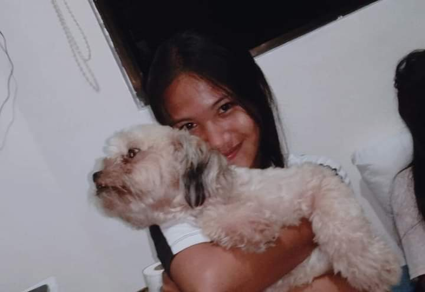
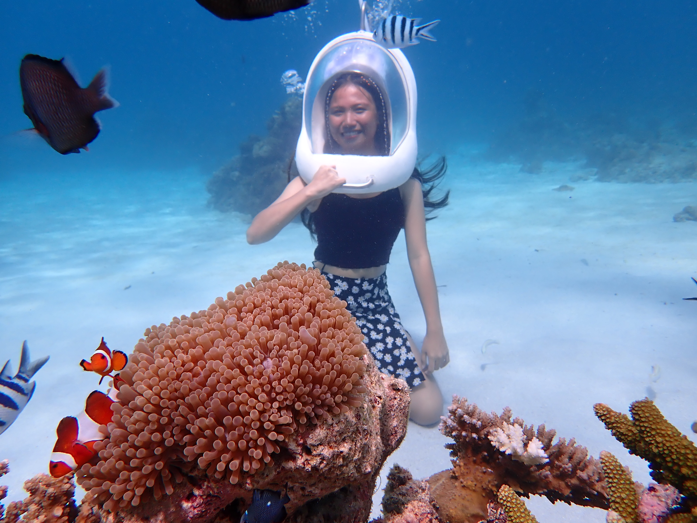

I am MICHELLE LOPEZ, and I am from Cebu, Philippines. I am a Second-year BSIT student at Cebu Technological University. What I really like is traveling around the world.
But here, we don't just build careers—we build futures. JUST BELIEVE IN YOURSELF, FIGHTING!!
Personal Values
Integrity, commitment to continuous learning, and compassion are core values that drive my work and life.
I believe that by staying true to these values, I can make a positive difference in the world.
Something Unique
As a friendly and soft-hearted person, I appreciate how CTU fosters a welcoming community, making it easier to connect, collaborate, and support each other.
It’s a university that empowers me not just in academics, but in building a future with purpose.
What Inspires Me
I draw a lot of inspiration from people who have already achieved success—especially those who started with humble beginnings.
It’s their resilience and accomplishments that keep me motivated to pursue my own goals,
make a difference, and one day be able to inspire others, too.

